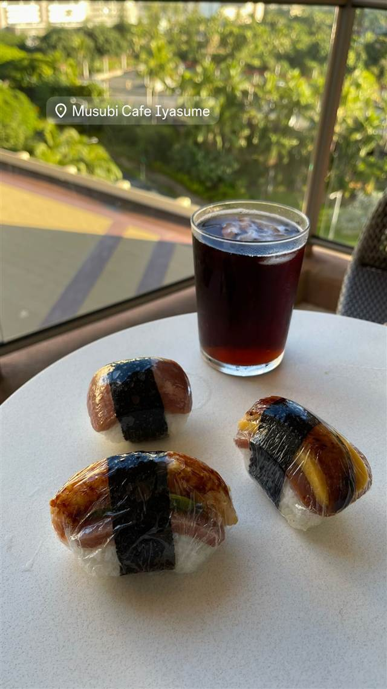

Musubi Cafe Iyasume Waikiki Monarch
ハワイ初のむすび専門店、高級米「玉錦」で作る手作りスパムむすび
Musubi Cafe Iyasume
2000年、日本からハワイへ渡った大竹俊之氏が「ハワイ初のむすび専門店」として創業。ワイキキのホテル軒先の小さなカウンターから始まり、厳選した高級米を使う手作りむすびが評判となって、現在はワイキキやアラモアナなど複数店舗を展開する人気店に成長した。
TRIVIA
へえ、という話
- ハワイ初のむすび専門店として2000年創業
- 開業当初はホテル軒先の6フィートのカウンターのみだった
| 創業 | 2000年創業（ハワイ初のむすび専門店） |
|---|---|
| 看板 | スパムむすび・照り焼きむすび |
| こだわり | カリフォルニア産コシヒカリ系高級米「玉錦（Tamaki Gold）」を使用し、一つひとつ手作りしている。 |
| 予算 | 昼 ～¥999 夜 ～¥999 |
| 場所 | ワイキキ 米国ハワイ州ホノルル 2427 Kuhio Ave（Aqua Pacific Monarch Hotel 1F） |
| 注意 | ワイキキ・アラモアナ・カハラなど複数店舗を展開する人気店。 |
食べたもの：スパムむすび
NEARBY
近い店・同じ系統の店
-
 パスタ ワイキキ
Arancino di Mare
ハワイ最高のイタリアンに選ばれた、直輸入食材のパスタ
昼 ¥2,000～¥2,999 夜 ¥15,000～¥19,999
パスタ ワイキキ
Arancino di Mare
ハワイ最高のイタリアンに選ばれた、直輸入食材のパスタ
昼 ¥2,000～¥2,999 夜 ¥15,000～¥19,999
-
 メキシコ ワイキキ
Buho Cocina Y Cantina
スペイン語でフクロウを意味する屋上350席のタコスとマルガリータ
夜 ¥5,000～¥5,999
メキシコ ワイキキ
Buho Cocina Y Cantina
スペイン語でフクロウを意味する屋上350席のタコスとマルガリータ
夜 ¥5,000～¥5,999
-
 ハワイ ワイキキ
Maguro Brothers Hawaii（ワイキキ店）
築地で目利きを鍛えた兄弟が営むチャイナタウン発のポキ丼
ハワイ ワイキキ
Maguro Brothers Hawaii（ワイキキ店）
築地で目利きを鍛えた兄弟が営むチャイナタウン発のポキ丼
-
 カフェ 白金台
Cafe La Boheme 白金（カフェ ラ・ボエム 白金）
明太子パスタを最初に出した、お城のような一軒家イタリアン
昼 ¥1,000～¥1,999 夜 ¥3,000～¥3,999
カフェ 白金台
Cafe La Boheme 白金（カフェ ラ・ボエム 白金）
明太子パスタを最初に出した、お城のような一軒家イタリアン
昼 ¥1,000～¥1,999 夜 ¥3,000～¥3,999
- 写真なし カフェ 北大路駅 大仙院 床の間と玄関が日本最古の国宝、千利休が秀吉に茶を献じた書院
-
 カフェ 江ノ電長谷駅
Venus Cafe（ヴィーナスカフェ）
稲村ジェーンのモデルになった、テキサス&メキシコ仕込みのハンバーガー
昼 ¥2,000～¥2,999 夜 ¥2,000～¥2,999
カフェ 江ノ電長谷駅
Venus Cafe（ヴィーナスカフェ）
稲村ジェーンのモデルになった、テキサス&メキシコ仕込みのハンバーガー
昼 ¥2,000～¥2,999 夜 ¥2,000～¥2,999